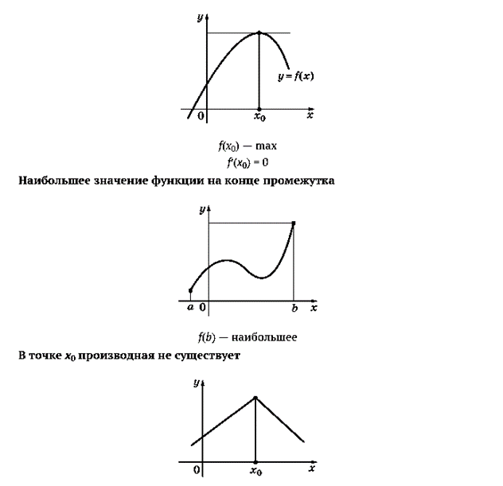
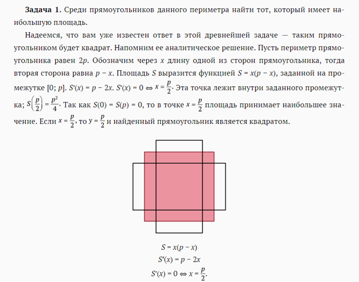
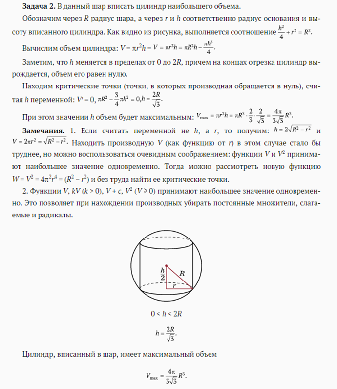
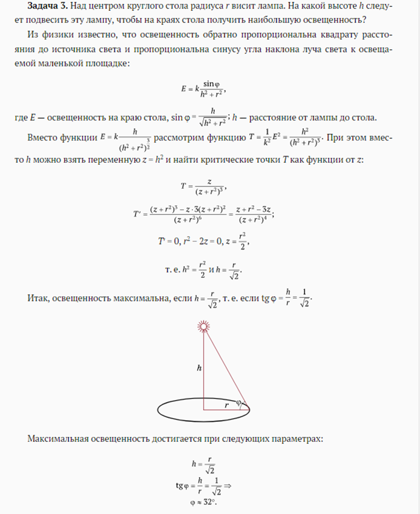
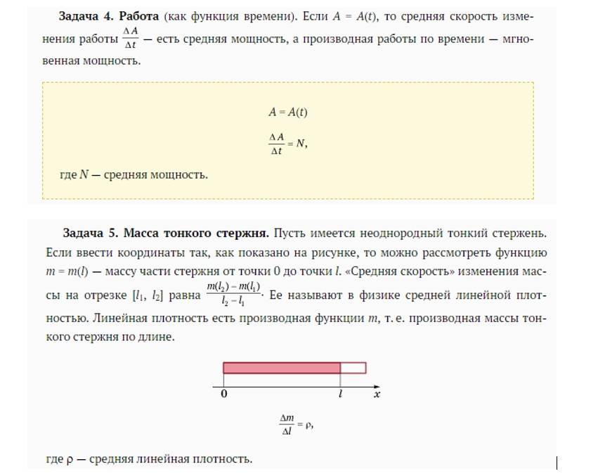
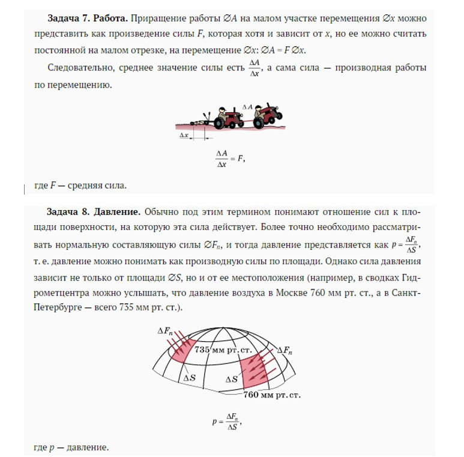
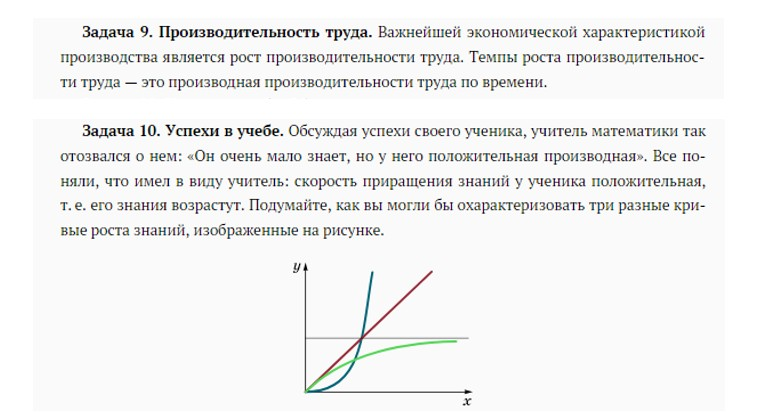
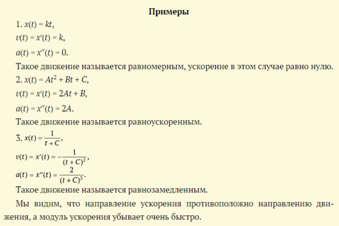
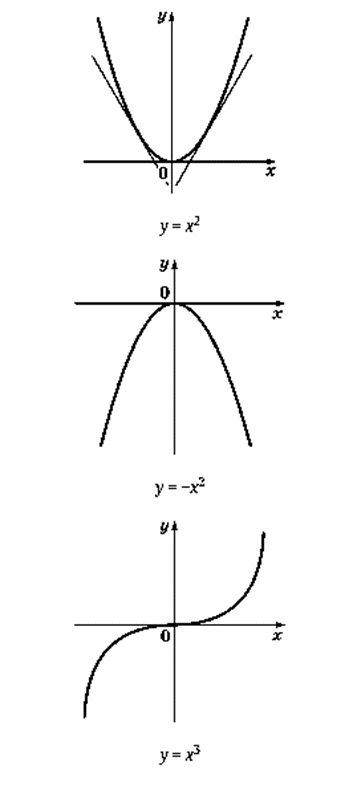
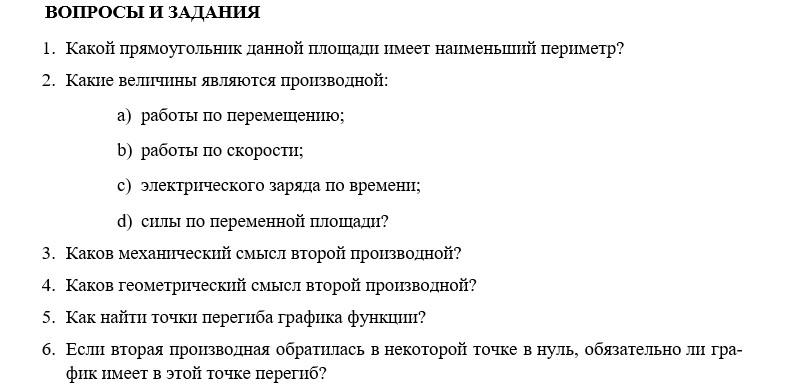

1. Задачи на максимум — минимум.Так традиционно называют задачи, в которых нужно найти наибольшее или наименьшее значение какой-нибудь величины. Математическая модель этой задачи обычно выглядит так: строится функция y = f(x), у которой нужно найти наибольшее или наименьшее значение на фиксированном промежутке [a; b]. Для решения задачи находят точки, «подозрительные» на экстремум: это точки, в которых производная обращается в нуль; точки, в которых производная не существует (нарушается гладкость функции) и концы промежутка. Затем вычисляются значения функции в этих точках и сравниваются между собой.
Наибольшее значение функции в точке x0




2. Нахождение скорости протекания процесса. Так как производная есть скорость роста функции, то всюду, где мы сталкиваемся с какой-либо переменной величиной, полезно рассматривать и ее производную — скорость ее изменения.





3. Вторая производная.
1) Ускорение.Ускорение по своему смыслу есть скорость изменения скорости. Если функция v = v(t) задает скорость движения точки по прямой, то производная этой функции есть ускорение: a(t) = v′(t).
Если задана координата x = x(t) точки, то, чтобы найти ускорение, надо сначала продифференцировать функцию x и получить скорость v, а затем еще раз продифференцировать и получить ускорение. Поэтому ускорение называют второй производной пути (перемещения) по времении обозначают так: a(t) = x′′(t).
Ускорение движения, когда координата x зависит от времени квадратично, постоянно и равно удвоенному коэффициенту при t 2 . Из механики известно и обратное — если ускорение постоянно, то перемещение зависит от t по квадратичному закону. Если ускорение равно a, скорость при t = 0 равна v0, а положение точки в начальный момент времени есть x0, то путь задается формулой Это объясняет смысл коэффициента в квадратичном законе движения.

С помощью второго закона Ньютона, зная ускорение, можно узнать, как изменяется со временем сила F = ma.
2) Второй закон Ньютона. С движением точки по некоторой кривой связан ряд векторных величин. Важнейшие среди них: r — радиус-вектор, характеризующий положение точки; v — скорость точки; a — ускорение
Между вектором ускорения a и вектором силы F, действующей на точку массой m, есть соотношение, являющееся одним из основных в механике: ma = F (второй закон Ньютона).
Если вспомнить, что ускорение является второй производной положения точки, то на соотношение ma = F можно посмотреть как на дифференциальное уравнение движения. В простых случаях из него можно получить зависимость вектора r от времени t.
3) Геометрический смысл второй производной. Мы уже отмечали, что понятие выпуклости функции тесно связано с поведением производной. Эту связь легко проследить по графику
Так как необходимым условием экстремума функции является обращение ее производной в нуль, необходимым условием перегиба функции будет обращение в нуль производной от ее производной, т. е. второй производной функции.
Пример. Найти точки перегиба функции y = x 3 − 3x. Вычисляем производные: y′ = 3x 2 − 3, y′′ = 6x, y′′ = 0 ⇔ x = 0, т. е. график функции имеет перегиб в начале координат.
Геометрический смысл второй производной

